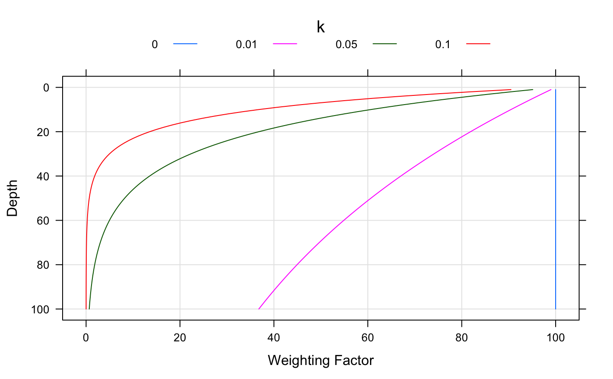

Numerical Soil Profile Comparison
profile_compare-methods.RdPerforms a numerical comparison of soil profiles using named properties, based on a weighted, summed, depth-segment-aligned dissimilarity calculation. If s is a SoilProfileCollection, site-level variables (2 or more) can also be used. The site-level and horizon-level dissimilarity matricies are then re-scaled and averaged.
pc(s, vars, max_d, k, filter=NULL, sample_interval=NA, replace_na=TRUE, add_soil_flag=TRUE, return_depth_distances=FALSE, strict_hz_eval=FALSE, progress='none', plot.depth.matrix=FALSE, rescale.result=FALSE, verbose=FALSE) pc.SPC(s, vars, rescale.result=FALSE, ...)
Arguments
| s | a dataframe with at least 2 columns of soil properties, and an 'id' column for each profile. horizon depths must be integers and self-consistent, or a |
|---|---|
| vars | A vector with named properties that will be used in the comparison. These are typically column names describing horizon-level attributes (2 or more), but can also contain site-level attributes (2 or more) if |
| max_d | depth-slices up to this depth are considered in the comparison |
| k | a depth-weighting coeficient, use '0' for no depth-weighting (see examples below) |
| filter | an index used to determine which horizons (rows) are included in the analysis |
| sample_interval | use every n-th depth slice instead of every depth slice, useful for working with > 1000 profiles at a time |
| replace_na | if TRUE, missing data are replaced by maximum dissimilarity (TRUE) |
| add_soil_flag | The algorithm will generate a 'soil'/'non-soil' matrix for use when comparing soil profiles with large differences in depth (TRUE). See details section below. |
| return_depth_distances | return intermediate, depth-wise dissimilarity results (FALSE) |
| strict_hz_eval | should horizons be strictly checked for internal self-consistency? (FALSE) |
| progress | 'none' (default): argument passed to |
| plot.depth.matrix | should a plot of the 'soil'/'non-soil' matrix be returned (FALSE) |
| rescale.result | should the result be rescaled by dividing by max(D) (FALSE) |
| verbose | extra debug output (FALSE) |
| ... | additional arguments to |
Methods
data = "SoilProfileCollection" see
SoilProfileCollectiondata = "data.frame" see profile_compare
Details
Variability in soil depth can interfere significantly with the calculation of between-profile dissimilarity-- what is the numerical ``distance'' (or dissimilarity) between a slice of soil from profile A and the corresponding, but missing, slice from a shallower profile B? Gower's distance metric would yield a NULL distance, despite the fact that intuition suggests otherwise: shallower soils should be more dissimilar from deeper soils. For example, when a 25 cm deep profile is compared with a 50 cm deep profile, numerical distances are only accumulated for the first 25 cm of soil (distances from 26 - 50 cm are NULL). When summed, the total distance between these profiles will generally be less than the distance between two profiles of equal depth. Our algorithm has an option (setting replace_na=TRUE) to replace NULL distances with the maximum distance between any pair of profiles for the current depth slice. In this way, the numerical distance between a slice of soil and a corresponding slice of non-soil reflects the fact that these two materials should be treated very differently (i.e. maximum dissimilarity).
This alternative calculation of dissimilarities between soil and non-soil slices solves the problem of comparing shallow profiles with deeper profiles. However, it can result in a new problem: distances calculated between two shallow profiles will be erroneously inflated beyond the extent of either profile's depth. Our algorithm has an additional option (setting add_soil_flag=TRUE) that will preserve NULL distances between slices when both slices represent non-soil material. With this option enabled, shallow profiles will only accumulate mutual dissimilarity to the depth of the deeper profile.
Note that when the add_soil_flag option is enabled (default), slices are classified as 'soil' down to the maximum depth to which at least one of variables used in the dissimilarity calculation is not NA. This will cause problems when profiles within a collection contain all NAs within the columns used to determine dissimilarity. An approach for identifying and removing these kind of profiles is presented in the examples section below.
A notice is issued if there are any NA values within the matrix used for distance calculations, as thes values are optionally replaced by the max dissimilarity.
Our approach builds on the work of (Moore, 1972) and the previously mentioned depth-slicing algorithm.
Value
A dissimilarity matrix object of class 'dissimilarity, dist', optionally scaled by max(D).
References
D.E. Beaudette, P. Roudier, A.T. O'Geen, Algorithms for quantitative pedology: A toolkit for soil scientists, Computers & Geosciences, Volume 52, 2013, Pages 258-268, ISSN 0098-3004, https://doi.org/10.1016/j.cageo.2012.10.020.
Moore, A.; Russell, J. & Ward, W. Numerical analysis of soils: A comparison of three soil profile models with field classification. Journal of Soil Science, 1972, 23, 194-209.
See also
Examples
# \donttest{ ## 1. check out the influence depth-weight coef: library(lattice) z <- rep(1:100,4) k <- rep(c(0,0.1,0.05,0.01), each=100) w <- 100*exp(-k*z) xyplot(z ~ w, groups=k, ylim=c(105,-5), xlim=c(-5,105), type='l', ylab='Depth', xlab='Weighting Factor', asp=1.5, auto.key=list(columns=4, lines=TRUE, points=FALSE, title="k", cex=0.8, size=3), panel=function(...) { panel.grid(h=-1,v=-1) panel.superpose(...) } )#>d.1 <- profile_compare(sp2, vars=c('prop','field_ph','hue','value'), max_d=100, k=0.01, plot.depth.matrix=TRUE)#>#># add some missing data: sp2$prop[1:2] <- NA d.2 <- profile_compare(sp2, vars=c('prop','field_ph','hue','value'), max_d=100, k=0.01, plot.depth.matrix=TRUE)#>#>#> [1] 0.9987445## 3. identify profiles within a collection that contain all NAs set.seed(1010101) s <- union(lapply(letters[1:10], random_profile, SPC=TRUE))#>#>#>#>#>#>#>#>#>#>#># replace first profile's data with NA na.required <- nrow(s[1, ]) s$p1[1:na.required] <- NA s$p2[1:na.required] <- NA # attempt profile comparison: this won't work, throws an error d <- profile_compare(s, vars=c('p1','p2'), max_d=100, k=0)#>#># check for soils that are missing all clay / total RF data f.check.NA <- function(i) length(which(is.na(i$p1) | is.na(i$p2))) / nrow(i) == 1 missing.too.much.data.idx <- which(profileApply(s, f.check.NA)) # remove bad profiles and try again: works # s.no.na <- profile_compare(s[-missing.too.much.data.idx, ], # vars=c('p1','p2'), # max_d=100, k=0, plot.depth.matrix=TRUE) ## 4. better plotting of dendrograms with ape package: if(require(ape) & require(cluster) & require(MASS)) { data(sp2) depths(sp2) <- id ~ top + bottom site(sp2) <- ~ surface d <- profile_compare(sp2, vars=c('prop','field_ph','hue','value'), max_d=100, k=0) h <- diana(d) p <- as.phylo(as.hclust(h)) plot(p, show.tip.label=FALSE) tiplabels(sp2$surface, col=cutree(h, 3), bg=NA, cex=0.75) ## 5. other uses of the dissimilarity matrix # Sammon Mapping: doesn't like '0' values in dissimilarity matrix d.sam <- sammon(d) # simple plot dev.off() ; dev.new() plot(d.sam$points, type = "n", xlim=range(d.sam$points[,1] * 1.5)) text(d.sam$points, labels=row.names(as.data.frame(d.sam$points)), cex=0.75, col=cutree(h, 3)) }#>#>#>#>#>#>#> Initial stress : 0.06149 #> stress after 10 iters: 0.03420, magic = 0.092 #> stress after 20 iters: 0.02491, magic = 0.500 #> stress after 30 iters: 0.02385, magic = 0.500 #> stress after 40 iters: 0.02327, magic = 0.500 #> stress after 50 iters: 0.02296, magic = 0.500 #> stress after 60 iters: 0.02280, magic = 0.500 #> stress after 70 iters: 0.02273, magic = 0.500## 6. try out the 'sample_interval' argument # compute using sucessively larger sampling intervals data(sp3) d <- profile_compare(sp3, vars=c('clay','cec','ph'), max_d=100, k=0.01)#>#>#>#>#>#>#>#># check the results via hclust / dendrograms oldpar <- par(mfcol=c(1,4), mar=c(2,1,2,2)) plot(as.dendrogram(hclust(d)), horiz=TRUE, main='Every Depth Slice') plot(as.dendrogram(hclust(d.2)), horiz=TRUE, main='Every 2nd Depth Slice') plot(as.dendrogram(hclust(d.10)), horiz=TRUE, main='Every 10th Depth Slice') plot(as.dendrogram(hclust(d.20)), horiz=TRUE, main='Every 20th Depth Slice') par(oldpar) # }